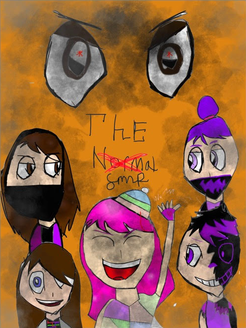

The Normal SMP - The Movie
The Normal SMP was a survival-multiplayer world in Minecraft that was definitely not normal! An amazing story was crafted, so now it is coming to film as The Normal SMP: The Movie.
When asked what inspired the director to make the movie:
"Just the friendship in The Normal SMP and how everything is and just how dedicated we were to the SMP, and I feel like if we made it into a film, it could make us all come together. And honestly, just seeing everybody replay their characters and what happened back then is just gonna be so fun to see." - Harper Vanhook, Director
This movie will be filmed in Minecraft, with everyone playing as their character in the first season of The Normal SMP and acting out what had happened during that time. The filming starts July 26, and the trailer on August 4th.
- Release Date: November 29, 2024
- Stage: Development
- Genre: Action, Minecraft, Drama, Crime
- Length: ????
Extras
The Normal SMP poster.
Reviews
"Placeholder review." - Name